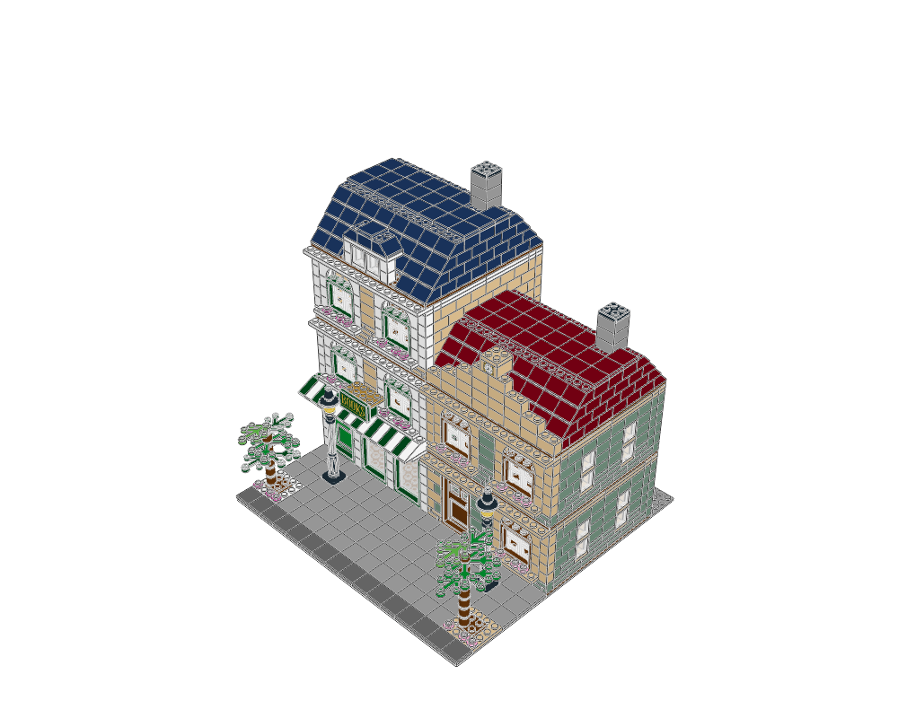
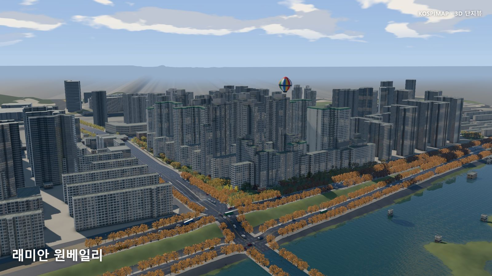
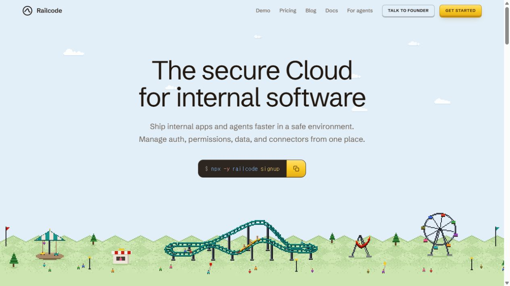

HELLO, HUMAN! / CASE STUDY
AI 사례연구
AI로 어디까지 만들 수 있을까?
공개된 결과물과 구현 과정을 살펴봅니다. 무엇이 가능해졌는지, 어디까지 확인됐는지, 우리 실험에 가져올 것은 무엇인지 분석합니다. 살펴볼 만한 사례가 생길 때 비정기적으로 발행합니다.
발행한 사례연구
04 CASE STUDIES-

AI에게 레고 설계를 맡기려면
무엇이 필요할까? ldraw-nova의 생성·검증에서 배우는 전시모듈 조합과 브랜드·기획전별 콘텐츠 설계 사례연구 읽기 -

낚시 게임의 엔진이
아파트 지도가 되기까지 KOSPIMAP의 렌더링·검증에서 찾는 3D 구매 경험과 공간데이터 활용의 힌트 사례연구 읽기 -

AI로 만든 웹사이트,
디자인은 사라지지 않았다 Railcode 사례로 살펴보는 시안 탐색, 임시 도구, 그리고 사람이 맡아야 할 판단 사례연구 읽기 -
AI와 만든 낚시 게임,
놀라운 것은 그래픽만이 아니다 Tidewater로 살펴보는 엔진 전환, 반복 개선, 그리고 검증 가능한 AI 개발 사례연구 읽기